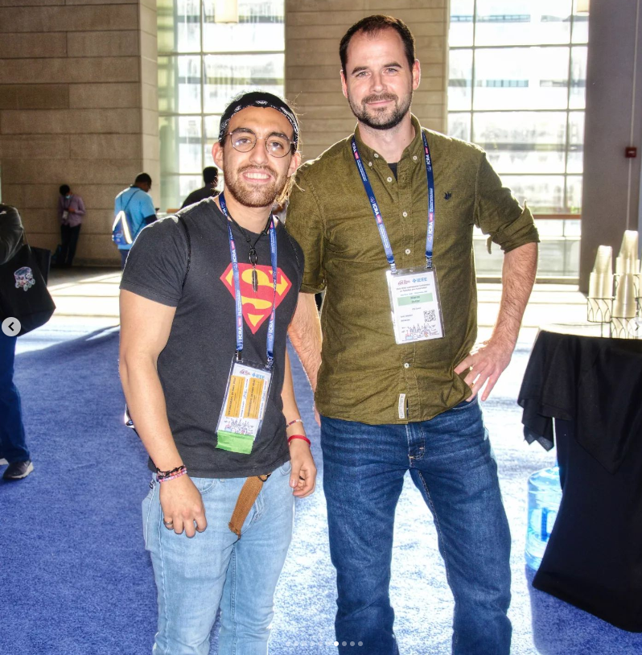
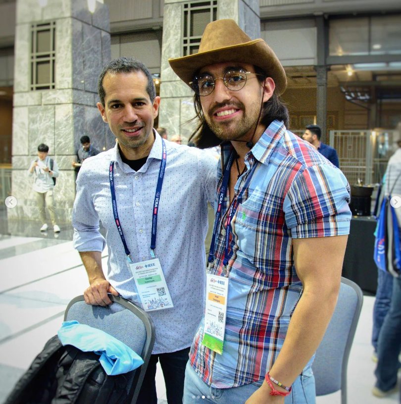
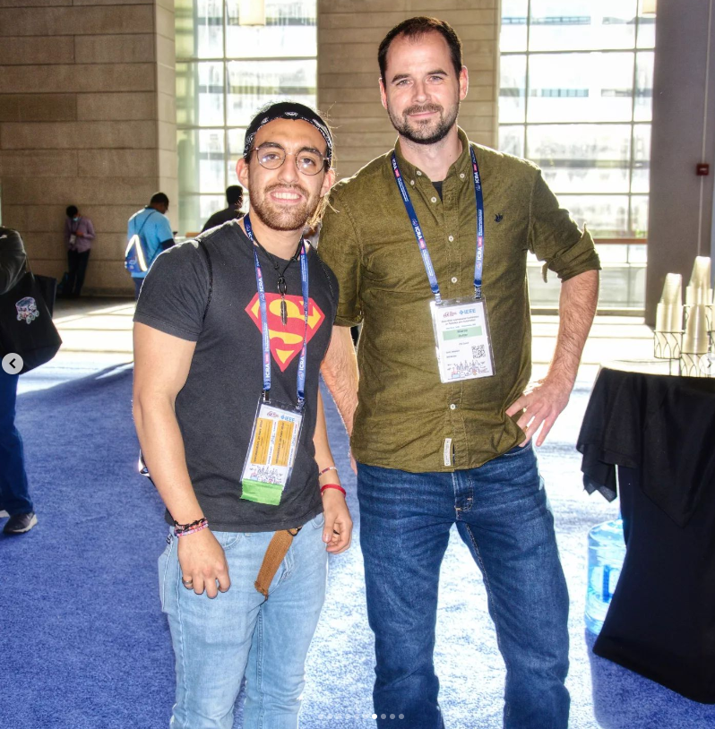
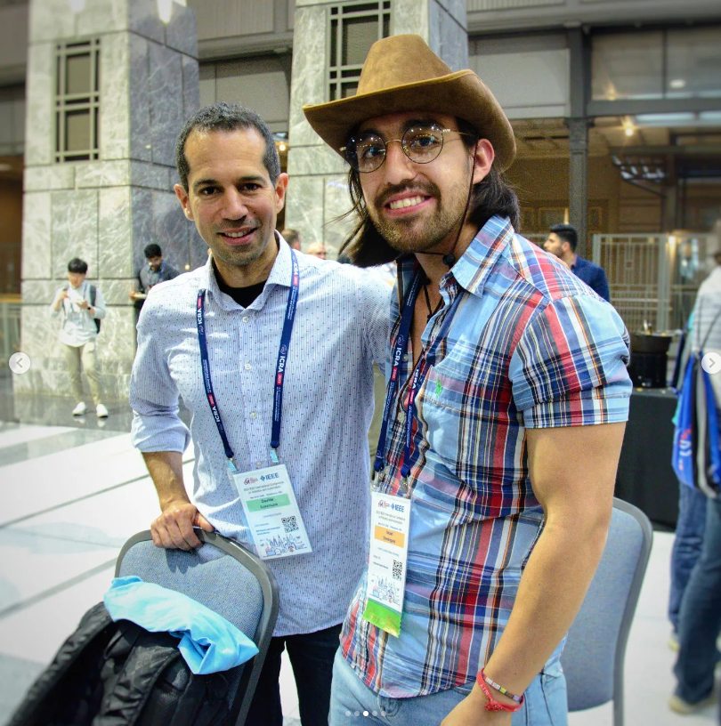
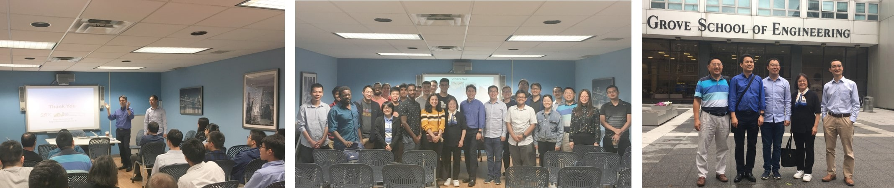
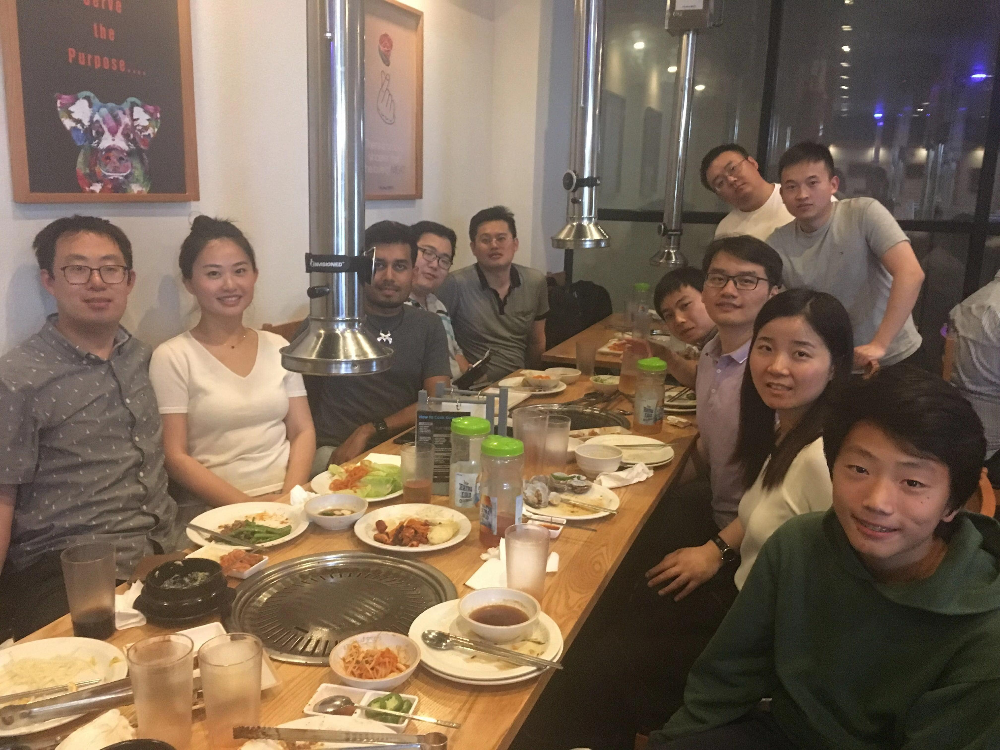

October, 2023
The Biomechatronics and Intelligent Robotics Lab joined the IEEE IROS 2023 event and shared their recent work on exoskeleton design and control.
Dr. Hao Su delivered a remarkable presentation during the workshop "State of the Art in Robotic Leg Prostheses: Where We Are and Where We Want to Be"
Jason Huang and Israel Dominguez, Ph.D. candidates, participated in the workshop "Assistive Robotics for Citizens", and presented our latest hip and shoulder exoskeleton designs through a hardware demonstration.
September, 2023
Postdoc fellow Yao Zhao has recently published a groundbreaking paper titled "Physically intelligent autonomous soft robotic maze escaper" (paper link) in the prestigious Science Advances and is now available for public access.
Paper citation: Zhao, Y., Hong, Y., Li, Y., Qi, F., Qing, H., Su, H., & Yin, J. (2023). Physically intelligent autonomous soft robotic maze escaper. Science Advances, 9(36), eadi3254.
September, 2023
PhD candidate Junxi Zhu received 2022 Best Paper in Mechatronics Award (paper link) that will be officially announced and presented at the Mechatronics TC meeting on Oct. 3 at the Modeling, Estimation and Control Conference at Lake Tahoe, NV. Junxi will be present at the meeting to receive the award.
Paper citation: J. Zhu, C. Jiao, I. Dominguez, S. Yu and H. Su, "Design and Backdrivability Modeling of a Portable High Torque Robotic Knee Prosthesis With Intrinsic Compliance for Agile Activities," in IEEE/ASME Transactions on Mechatronics, vol. 27, no. 4, pp. 1837-1845, Aug. 2022
August, 2023
Dr. Su is invited to join Editorial Advisory Board, International Journal of Medical Robotics and Computer Assisted Surgery.
June 3, 2023
Israel Dominguez presented our work "Reinforcement Learning through Physics-based and Data-driven Approaches for Exoskeleton Control in the Real World " at the 2023 IEEE International Conference on Robotics and Automation (ICRA), Workshop: Neuromechanics Meets Deep Learning. London, UK.Israel participated in 3 workshops at ICRA:
Monday, May 28
- Communicating Robot Learning Across Human-robot Interaction, Monday
- Neuromechanics Meets Deep Learning, Monday
Friday, June 3
- Harvard Computer Vision for Wearable Robotics Workshop, Friday
April, 2023
Biomechatronics and Intelligent Robotics Lab Ph.D. Candidates visited the Brain Tool Laboratory directed by Dr. Patrick Codd with the Department of Neurosurgery and the Pratt School of Engineering at Duke University in Durham, NC.

April, 2023
Dr. Su presented the Biomechatronics and Intelligent Robotics Lab latest research about wearable robots at the Wearable Robotics Association WearRAcon 23 hosted in the Hyatt Regency New Orleans, Louisiana
The Ph.D. Candidate, Israel Dominguez, and Master Candidate, Jason Huang, performed a hardware demonstration of the BiroLab hip, knee, and upper-limb exoskeletons
.jpeg)
.jpg)
.jpg)
.jpg)
November, 2022
Dr. Su gave invited talk with Dr. Thomas Bulea at National Institute of Health titled “Affordable Wearable Robots for Translational Medicine” at Global Perspectives on Medicine, Rehabilitation and Robotics Webinar Series organized by Prof. Michelle Johnson at UPenn and Prof. Rochelle Mendonca at Columbia U.
October, 2022
Dr. Hao Su received a Distinguished Switzer Fellowship from the National Institute on Disability, Independent Living, and Rehabilitation Research (NIDILRR). The project title is “Biomechanical Benefits of Lightweight Wearable Robots for Community-Based Mobility Assistance of Children with Crouch Gait from Cerebral Palsy.”
September, 2022
Dr. Su received NSF Future of Work grant to design image-guided semi-autonomous surgical robots to protect healthcare workers. The project is titled "Safeguarding the Health of Healthcare Workers During Future Pandemics, Using Robotics and Automation"
July, 2022
Professor Su presented the recent research from the Biomechatronics and Intelligent Robotics Lab at the National Workshop on Human-like Robots sponsored by the National Science Foundation (NSF) and hosted in Arlington, VA.Israel Dominguez (BIROLab PhD student) represented our lab in the National Workshop on Human-like Robots (In-Person)


July, 2022
Professor Hao Su has been appointed a Technical Editor of IEEE/ASME Transactions on Mechatronics, a high-quality archival journal which presents the state of the art, recent advances and practical applications of mechatronics.
June, 2022
Israel Dominguez (BIROLab PhD student) participated with the talk "Design and Control of High Compliance and High Bandwidth Wearable Robots for Versatile Activities" at The 2022 Dynamic Walking Conference hosted in Madison, Wisconsin
May 23, 2022
The Biomechatronics and Intelligent Robotics Lab members presented four papers at The IEEE International Conference on Robotics and Automation 2022 (ICRA'22) hosted in Philadelphia, Pennsylvania
Workshops
Determining Appropriate Metrics and Test Methods for Soft Actuators in Robotic SystemsHuman-in-the loop paradigm for assistive robotics

  
 
May 23, 2022
Weibo Gao (BIROLab PhD student) participated with a talk in the workshop "Determining Appropriate Metrics and Test Methods for Soft Actuators in Robotic Systems" for The IEEE International Conference on Robotics and Automation 2022 (ICRA'22) hosted in Philadelphia, Pennsylvania
ICRA 2022 Workshop
May, 2022
Dr. Su is pleased to give invited talk in the workshop "Robotic Technologies for Elderly Walking Assistance" for The 2022 IEEE International Conference on Advanced Robotics and its Social Impacts (ARSO) hosted in Long Beach, California
Welcome to ARSO 2022
April, 2022
The NC State Chancellor visited Dr. Hao Su’s Biomechatronics and Intelligent Robotics Lab, where Dr. Su and his students showcased their work with multiple soft, surgical and humanoid robots.
NCSU: Chancellor visits MAE
March, 2022
Dr. Su received a grant to conduct clinical testing of our lightweight knee exoskeleton with Dr. Peter Barrance at Kessler Foundation, a top 3 rehabilitation hospital research center in the US, to evaluate the biomechanics and pain relief of exoskeleton-assisted locomotion for people with musculoskeletal impairments.
February 25th, 2022
Shuangyue Yu successfully completed his thesis defense and finished his doctoral program. CONGRATULATIONS
February 2022
PhD student from BIRO lab, Shuangyue Yu won Best Student Paper Award, Dynamic Systems & Control Division (DSCD), American Society of Mechanical Engineers (ASME), selected from 4 international conferences (1200+ papers), including 2020 IEEE/ASME International Conference on Advanced Intelligent Mechatronics (AIM, 262 papers), 2020 American Control Conference (ACC, 800+ papers), 2020 ASME DSCD Dynamic Systems and Control Conference (DSCC, 140 papers), 2020 International Symposium on Flexible Automation (ISFA, 55 papers)
October 2021
Our Lab won the Best Poster Award, Workshop Challenges and Opportunities of Human-robot Symbiosis: from Wearable Robots to Neurorobotics, International Conference on Intelligent Robots and Systems (IROS), Prague, Czech Republic, 2021
July 2021
Dr. Su delivered the talk “Unleash the Tether: High Force Actuators for Portable and Efficient Soft Robots" for The 2021 IEEE/ASME International Conference on Advanced Intelligent Mechatronics (AIM).
AIM 2021 Workshops
June 2021
Dr. Su presented the talk “Unleash the Tether: High Force Actuators for Portable and Efficient Soft Robots" for The Seasonal School on “Rehabilitation and Assistive Technologies based on Soft Robotics” (SofTech-Rehab) sponsored by the IEEE Robotics & Automation Society.
SofTech-Rehab Program
March 2021
Two of our co-authored paper with Professor Axel Krieger, Russel H. Taylor and Robin R. Murphy on discussing the role that robots take in tackling with the COVID19 pandemic were published on Nature Machine Intelligence and Science Robotics. Two paper are titled Physical human–robot interaction for clinical care in infectious environments and Progress in robotics for combating infectious diseases.
August 2020
Dr. Su will lead an 8 faculty team from CUNY, NYU and Rutgers with $2.78M National Science Foundation (NSF) Grant to develop Perceptive and Adaptive Soft (PECASO) Robots to impact the future of work at the Human-Technology Frontier.
July 2020
Two of our works were awarded in the 2020 IEEE/ASME International Conference on Advanced Intelligent Mechatronics (AIM 2020):
Quasi Direct Drive Actuation for a Lightweight Hip Exoskeleton with High Backdrivability and High Bandwidth
was selected finalist in the Best Student Paper Award, and
An Untethered Electro-Pneumatic Soft System for People with Foot Drop received the third prize of Student Design Competition.
First authors are the PhD student Shuangyue Yu and the undergraduate student Lizzette Salmeron, respectively, mentored by Prof. Su.
[Video 1]
[Video 2]
[Award 1]
[Award 2]
May 2020
Our paper Untethered Electro-Pneumatic Exosuit for Gait Assistance of People with Foot Drop received the second prize of Three in Five Competition in ASME Design of Medical Devices Conference. This paper was led by undergraduate students Lizzette Salmeron and Gladys Juca and mentored by Prof. Su. [Video] [Award 1] [Award 2]
 Lizzette Salmeron |
 Gladys V. Juca Castro |
Apr 2020
Prof. Su received a National Science Foundation CAREER award for $552K, the agency's highest honor for faculty members at the start of their research and teaching careers.
Mar 2020
Our lab won the second prize of WearRAcon Innovation Challenge.
Feb 2020
Our work in collaboration with Prof. Jie Yin at NCSU is accepted for publication in Science Advances. Title is "Leveraging Elastic instabilities for Amplified Performance (LEAP): spine-inspired high-speed and high-force soft robots"
Jan 2020
IROS2020 workshop Mechanisms and Design: from Inception to Realization is accepted.
Prof. Su is the organizer with Profs. Matei Ciocarlie at Columbia, Kyu-Jin Cho at Seoul National University, Darwin Lau at Chinese University of Hong Kong, Claudio Semini at Istituto Italiano di Tecnologia, Damiano Zanotto at Stevens Institute of Tech.
Jan 2020
The President of City College of New York visited the lab to know more about the NIH R01 grant. Prof. Su gave an introduction about the lab to the President. PhD and undergraduate students presented their soft robot projects.

Nov 2019
Prof. Su is named Irwin Zahn Endowed Assistant Professor to recognize his teaching excellence.
Oct 2019
Our lab received NIH R01 grant to study data-driven highly-dynamic cyber-physical systems that combine high-performance actuators and artificial intelligence to develop exoskeletons and prostheses in collaboration with Dr. Hartmut Geyer at CMU.
Sep 2019
Our lab received $1.3M grant to establish the Center of Assistive and Personal Robotics for Independent Living (APRIL) that will develop affordable wearable robots for people with disabilities.
10/05/2019
Dr. Hao Su and lab members attended the Northeast Robotics Colloquium (NERC) 2019 in Philadelphia, PA. We presented 3 posters.
1. Soft Wearable Robots for Injury Prevention and Performance Augmentation
2. Lightweight and Backdrivable Knee Exoskeletons for Injury Prevention and Pediatric Rehabilitation
3. Soft and Strong Actuators for Upper Limb Augmentation
10/12/2019
Lab members attended the 27th CAST-USA Annual Convention, whose theme is Advance Science and Technology for the Benefit of Humanity. Lab members had fun with Prof. Eric R. Kandel, M.D. who is the members of the United States National Academy of Sciences and the Nobel Prize laureate in Physiology or Medicine. 2 students won the Best Poster Award


09/27/2019
Prof. Arockia Selvakumar from Vellore Institute of Technology, India visited our Lab

09/27/2019
Biomechatronics Lab hosted visiting students Shotaro Higashi and Aiman Faruq from Toyohashi University of Technology, Japan in September

09/12/2019
Prof. Kyujin Cho from Seoul National University delivered the IEEE RAS Distinguished Lecture on soft robotics.

08/23/2019
Dr. Hao Su and lab members attended Rehabilitation Robotics Symposium: From Design to Clinical Application Dr. Su delivered invited talk “Soft, Strong, and Smart Wearable Robots for Mobility and Manipulation Assistance”. The talk was well-received by the audience consisting of clinicians, physical therapist, and engineers.

07/19/2019
PhD students Selina and Hang mentored three high school students from CT and NJ.

07/13/2019
BMW engineer visited Biomechatronics Lab

06/20/2019
Biomechatronics Lab hosted a birthday party for Howard

06/06/2019
Drs. Chen Feng, Ludovic Righetti, and Su organized Soft Robotics and Learning workshop. More than 50 people attended the workshop.

04/2019
Best Paper Finalist, Three in Five Competition, ASME Annual Design of Medical Devices Conference
08/2018
Dr. Hao Su co-organized CIPASS Mechatronics Workshop with Jorge Gonzalez-Cruz, Dr. Feridun Delale, and Dr. Fred Moshary of the CIPASS Experiential Learning Team. Invited guests include Brian Wilson (CEO, DuroUAS), Dr. Biao Zhang (lead principal scientist, ABB), Ranjan Mishra (principal engineer, Medtronic), and Dale Swarts (Senior Director,Stryker).

Congratulations for Viktor Silivanov, Hadia Perez, Brian Lynn, and Tom Park for receiving the fellowship and successfully defending their summer research work on soft exoskeletons sponsored by the CiPASS (CCNY Initiative to Promote Academic Success in STEM) program. What a summer! We are proud of your achievement.

07/2018
Lab's first journal paper is accepted and we will present it in Spain!
J. Wang, X. Li, T. Huang, S. Yu, Y. Li, T. Chen, A. Carriero, M. Oh-Park, H. Su, “Comfort-Centered Design of a Lightweight and Backdrivable Knee Exoskeleton”, IEEE Robotics and Automation Letters (RA-L), 2018
05/2018
Students Jade Ardinez and Winnie mentored by Prof. Hao Su won $50K Kaylie Prize for Entrepreneurship, Zahn Center, City College of New York
Lab receives the TechSAge Design Competition Finalist sponsored by Georgia Tech and the National Institute on Disability, Independent Living and Rehabilitation Research
Students (Ben Bokser, Valentin Adesman, Michael Sidoo, Diego Monastra, Brian Lui, Richard Wilson) mentored by Prof. Hao Su receive Jack & Shelly Feinstein Best Senior Design Team Award and $10K Zahn startup Competition semi-finalist, 2018 spring
Research assistant Brian Lynn received Peter L. Tea Award for undergraduate research
04/2018
03/2018
Our paper on high torque density actuator was accepted for Dynamic Walking Conference 2018.
02/2018
Our paper on soft exo-sheath for hand rehabilitaiton was accepted for IEEE Conference on Soft Robotics 2018.
10/2016
I am honored to join the Technical Committee on Mechanisms and Design of the IEEE Robotics and Automation Society (RAS) as a Junior Chair.
09/2016
I was promoted to Associate Editor of the Journal: Frontiers in Robotics and AI
06/2016
Our paper on soft exosuit control was accepted by International Symposium on Wearable Robotics.
03/2016
I was invited to be an Associate Editor for the International Conference of the IEEE Engineering in Medicine and Biology Society (EMBC).

10/2015, MRI-Guided Robot: The Brains Behind Better Neurosurgery? , IEEE Xplore Innovation Spotlight, by IEEE

07/2015, Inside an MRI, a Non-Metallic Robot Performs Prostate Surgery , IEEE Spectrum, by Eliza Strickland
11/2014
I received the Philips Innovation Transfer Award for contribution to electromechanial system design for clinical simulations.
10/2014
I was invited to be an Associate Editor for the IEEE International Conference on Robotics and Automation 2015.
04/2014
I was the conference committee member and organization chair of Catheter Robotics session for ASME Design of Medical Devices Conference 2014.